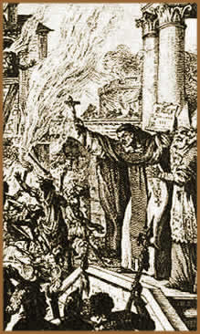
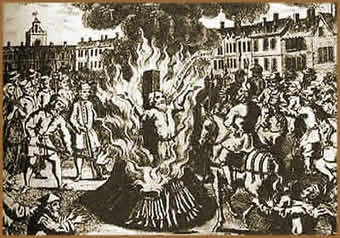

No século IV, quando o Cristianismo
se propagava, a Igreja Católica havia tomado santuários
e templos sagrados de povos pagãos, para implantar sua
religiosidade e erigir suas igrejas. Nos primórdios do
Catolicismo, acreditavam que os pagãos continuariam a freqüentar
estes lugares sagrados para reverenciarem seus Deuses. Mas com
o passar do tempo, assimilariam o cristia- nismo substituindo
o paganismo, através da anulação.
Mesmo
assim, por toda a parte, havia uma constante veneração
às divindades pagãs. Ao longo dos séculos,
a estratégia da Igreja Católica não funcionou,
e através da Inquisição, de uma forma ensandecida
e sádica, as autoridades eclesiásticas tentaram
apagar de uma vez por todas a figura da Grande Deusa Mãe,
como principal divindade cultuada sobre todos os extremos da Terra.
O Catolicismo medieval transfor- mou o culto à Grande Deusa
Mãe, num culto satânico, promo- vendo uma campanha
de que a adoração dos deuses pagãos era equivalente
à servidão a satã.
Inquisição é o ato de inquirir,
isto é, indagar, investigar, interrogar judicialmente.
No caso da Santa Inquisição, significa "questionar
judicialmente aqueles que, de uma forma ou de outra, se opõem
aos preceitos da Igreja Católica". Dessa forma,
a Santa Inquisição, também conhecida como
Santo Ofício, foi um tribunal eclesiástico criado
com a finalidade "oficial" de investigar e punir os
crimes contra a fé católica. Na prática,
os pagãos representavam uma constante ameaça à
autoridade clerical e a Inquisição era um recurso
para impor à força a supremacia católica,
exterminando todos que não aceitavam o cristianismo nos
padrões impostos pela Igreja. Posteriormente, a Santa Inquisição
passou a ser utilizada também como um meio de coação,
de forma a manipular as autoridades como meio de obter vantagens
políticas.
A caça
às bruxas
A Santa Inquisição teve seu início
no ano de 1184, em Verona, com o Papa Lúcio III. Em 1198,
o Papa Inocêncio III já havia liderado uma cruzada
contra os albigenses (hereges do sul da França), promovendo
execuções em massa. Em 1229, sob a liderança
do Papa Gregório IX, no Concílio de Tolouse, foi
oficialmente criada a Inquisição ou Tribunal do
Santo Ofício. Em 1252, o Papa Inocêncio IV publicou
o documento intitulado Ad Exstirpanda, que foi fundamental na
execução do plano de exterminar os hereges. O
Ad Exstirpanda foi renovado e reforçado por vários
papas nos anos seguintes. Em 1320, a Igreja (a pedido do Papa
João XXII) declarou oficialmente que a Bruxaria, e a Antiga
Religião dos pagãos constituíam um movimento
e uma "ameaça hostil" ao cristianismo.
Os inquisidores, cidadãos encarregados de
investigar e denunciar os hereges, eram doutores em Teologia,
Direito Canônico e Civil. Inquisidores e informantes eram
muito bem pagos. Todos os que testemunhassem contra uma pessoa
supostamente herege, recebiam uma parte de suas propriedades e
riquezas, caso a vítima fosse condenada.
Os inquisidores deveriam ter no mínimo 40
anos de idade. Sua autoridade era outorgada pelo Papa através
de uma bula, que também podia incumbir o poder de nomear
os inquisidores a um Cardeal representante, bem como a padres
e frades franciscanos e dominicanos. As autoridades civis, sob
a ameaça de excomunhão em caso de recusa, eram ordenadas
a queimar os hereges. Camponeses eram incentivados (ludibriados
com a promessa de ascenderem ao reino divino ou através
de recompensas financeras) a cooperarem com os inquisidores. A
caça às Bruxas tornou-se muito lucrativa.
Geralmente
as vítimas não conheciam seus acusadores, que podiam
ser homens, mulheres e até crianças. O processo
de acusação, julgamento e execução
era rápido, sem formalidades, sem direito à defesa.
Ao réu, a única alternativa era confessar e retratar-se,
renunciar sua fé e aceitar o domínio e a autoridade
da Igreja Católica. Os direitos de liberdade e de livre
escolha não eram respeitados. Os acusados eram feitos prisioneiros
e, sob tortura, obrigados a confessarem sua condição
herética. As mulheres, que eram a maioria, comumente eram
vítimas de estupro. A execução era realizada,
geralmente, em praça pública sob os olhos de todos
os moradores. Punir publicamente era uma forma de coagir e intimidar
a população. A vítima podia ser enforcada,
decapitada, ou, na maioria das vezes, queimada.
Malleus
Maleficarum
Em 1486 foi publicado um livro chamado Malleus
Maleficarum (Martelo das Bruxas) escrito por
dois monges dominicanos, Heinrich Kramer e James Sprenger. O Malleus
Maleficarum é uma espécie de manual que ensina os
inquisidores a reconhecerem as bruxas e seus disfarces, além
de identificar seus supostos malefícios, investigá-las
e condená-las legalmente. Além disso, também
continha instruções detalhadas de como torturar
os acusados de bruxaria para que confessassem seus supostos crimes,
e uma série de formalidades para a execução
dos condenados. Ainda, o tratado afirmava que as mulheres deveriam
ser as mais visadas, pois são naturalmente propensas à
feitiçaria. O livro foi amplamente usado por supostos "caçadores
de bruxas" como uma forma de legitimar suas práticas.
Alguns itens contidos no Malleus Maleficarum que
tornavam as pessoas vulneráveis à ação
da Santa Inquisição:
Hecatombe
Gradativamente, contando com o apoio e o interesse
das monarquias européias, a carnificina se espalhou por
todo o continente. Para que se tenha uma idéia, em Lavaur,
em 1211, o governador foi enforcado e a esposa lançada
num poço e esmagada com pedras; além de quatrocentas
pessoas que foram queimadas vivas. No massacre de Merindol, quinhentas
mulheres foram trancadas em um celeiro ao qual atearam fogo. Os
julgamentos em Toulouse, na França, em 1335, levaram diversas
pessoas à fogueira; setecentos feiticeiros foram queimados
em Treves, quinhentos em Bamberg. Com exceção da
Inglaterra e dos EUA, os acusados eram queimados em estacas. Na
Itália e Espanha, as vítimas eram queimadas vivas.
Na França, Escócia e Alemanha, usavam madeiras verdes
para prolongar o sofrimento dos condenados. Ainda, a noite de
24 de agosto de 1572, que ficou conhecida como "A noite de
São Bartolomeu", é considerada "a mais
horrível entre as ações inquisidoras de todos
os séculos". Com o consentimento do Papa Gregório
XIII, foram eliminados cerca de setenta mil pessoas em apenas
alguns dias.
Além da Europa, a Inquisição
também fez vítimas no continente americano. Em Cuba
iniciou-se em 1516 sob o comando de dom Juan de Quevedo, bispo
de Cuba, que eliminou setenta e cinco hereges. Em 1692, no povoado
de Salem, Nova Inglaterra (atual E.U.A.), dezenove pessoas foram
enforcadas após uma histeria coletiva de acusações.
No Brasil há notícias de que a Inquisição
atuou no século XVIII. No período entre 1721 e 1777,
cento e trinta e nove pessoas foram queimadas vivas.
No século XVIII chega ao fim as perseguições
aos pagãos, sendo que a lei da Inquisição
permaneceu em vigor até meados do século XX, mesmo
que teoricamente. Na Escócia, a lei foi abolida em 1736,
na França em 1772, e na Espanha em 1834. O pesquisador
Justine Glass afirma que cerca de nove milhões de pessoas
foram acusadas e mortas, entre os séculos que durou a perseguição.
Por
Spectrum